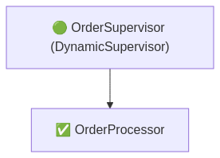
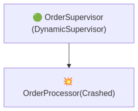
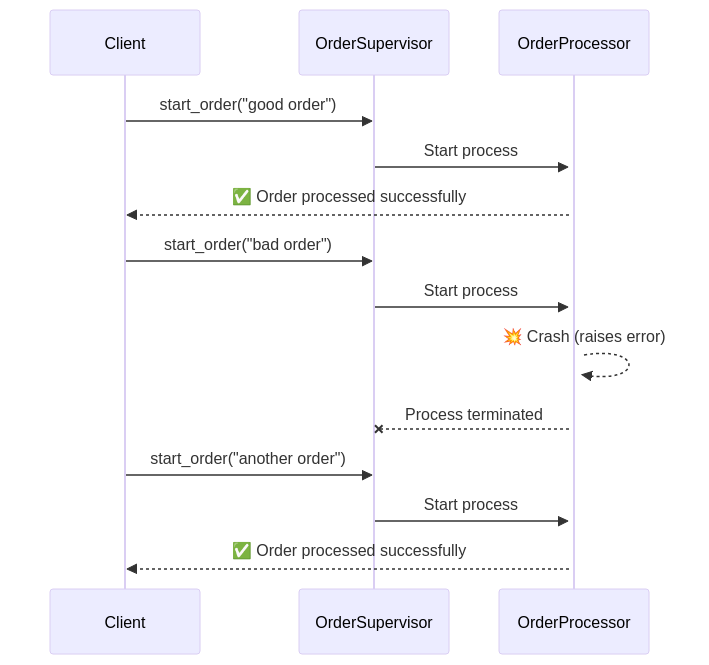

Scalable, Fault-Tolerant, Functional
Designed by

José Valim
Why was Elixir Created?
- José Valim made Elixir because:
- Ruby (MRI) threads are not real threads
- Ruby on Rails thread safety is hard to keep
- He heard about what we can do with Erlang
- Development:
- Started in 2010
- Version 1.0 released in 2014
Comparison ?

JS can be functional, whereas Elixir is (always) Functional!
Definition
Fault: A defect or error in the software.
Failure: The observable incorrect behavior caused by the fault.
Example 1: Bug in Code
Fault: Incorrect discount calculation (e.g., division by zero).
Failure: The application crashes when a user applies a discount.
Example 2: Memory Leak
Fault: Memory is not released properly.
Failure: The application slows down and eventually crashes.
Elixir process world

Demo: Process

OOP? Will Crash on Error
Handle exception with (try-catch) block
class SumCalculator
def calc_sum(n)
raise "error" if n == 13
(1..n).sum
end
end
calc = SumCalculator.new
begin
puts calc.calc_sum(10) # Output: 55
puts calc.calc_sum(13) # Error, but program continues
rescue => e
puts "Caught error: #{e}" # Handles error manually
end
"Worker"
defmodule OrderProcessor do
use GenServer
def start_link(order) do
GenServer.start_link(__MODULE__, order, name: via_tuple(order))
end
defp via_tuple(order), do: {:via, Registry, {OrderRegistry, order}}
def init("bad order"), do: raise("💥 Order failed!")
def init(order) do
IO.puts("✅ Order processed successfully: #{order}")
{:ok, order}
end
end
"Supervisor"
defmodule OrderSupervisor do
use DynamicSupervisor
def start_link(_arg) do
DynamicSupervisor.start_link(__MODULE__, [], name: __MODULE__)
end
@impl true
def init(_arg) do
DynamicSupervisor.init(strategy: :one_for_one)
end
def start_order(order) do
DynamicSupervisor.start_child(__MODULE__, {OrderProcessor, order})
end
end
"Test"
children = [
{DynamicSupervisor, name: OrderSupervisor, strategy: :one_for_one},
{Registry, keys: :unique, name: OrderRegistry}
]
Supervisor.start_link(children, strategy: :one_for_one)
OrderSupervisor.start_order("good order")
OrderSupervisor.start_order("bad order") # This crashes but won't affect other processes
OrderSupervisor.start_order("another good order")
Normal - Supervisor tree
Crash - Supervisor tree
Restart - Supervisor tree
Order - "Let it crash"
restartson for one

Demo
Fail fast, let it crash
a software development principle advocating for immediate error reporting and system termination (or "crash") rather than attempting to continue execution in an invalid state

Summary
- Functional, immutable, concurrent, fault-tolerant
- Runs on BEAM, great for scalability